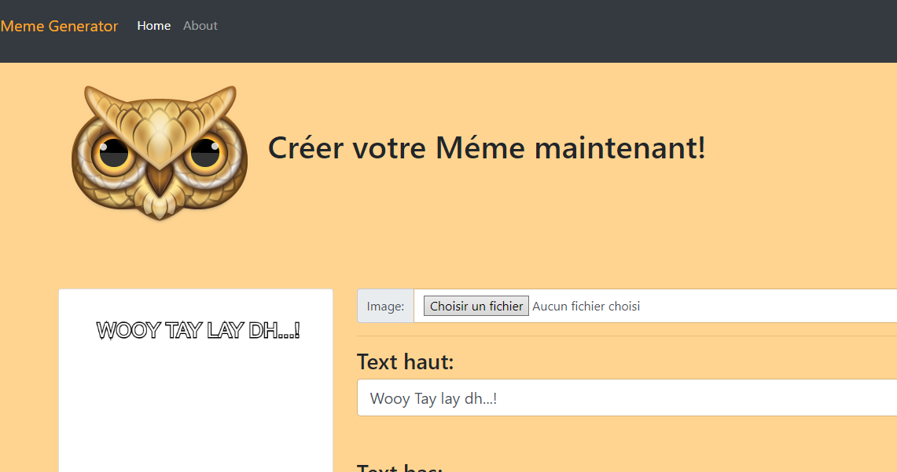

<!--
  Generated template for the ProjetsPage page.

  See http://ionicframework.com/docs/components/#navigation for more info on
  Ionic pages and navigation.
-->
<ion-header>

  <ion-navbar>
    <ion-title>projets</ion-title>
  </ion-navbar>

</ion-header>


<ion-content padding>
  <h1>MEME_GENERATOR</h1>
  <div class="">

    <ion-card>
     
   </ion-card>

   <ion-card>
    
  </ion-card>
  </div>
  <ion-card>
   
  </ion-card>

  <!-- LA LISTE -->
  <ion-list>
     <button ion-item (click)=" LISTE()">
    description projet
     </button>
     <button ion-item (click)="LISTE()">
      gjhgjhg
     </button>
     <button ion-item (click)=" LISTE()">
       Events
     </button>
     <button ion-item (click)="closeMenu()">
       Close Menu
     </button>
   </ion-list>
</ion-content>
